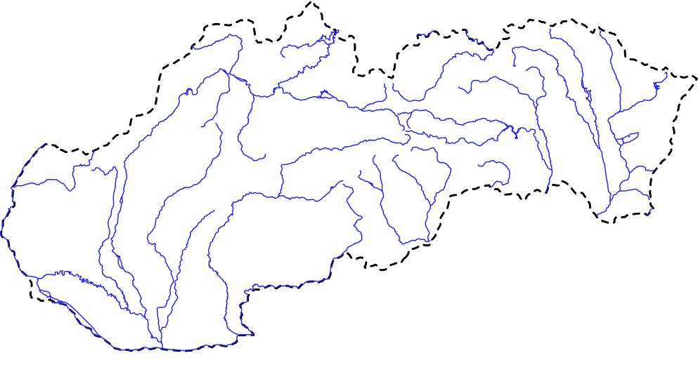

Poznávanie
Vyskúšaj sa!
Na mape sa objaví 3, 5 alebo 7 značiek. Jedna patrí zadanému objektu — klikni na tú správnu. Všetky pôvodné testy a obtiažnosti.
Pôvodná hra · 8 máp · editor
Kompletná webová verzia · 8 máp · 1 982 objektov
Vyskúšaj sa!, Traf sa! a Poskladaj! presne podľa pôvodnej hry — na Slovensku, svete, Európe, Afrike, Ázii, Austrálii a oboch Amerikách. K tomu plnohodnotný editor máp s vrstvami, farbami, značkami, kreslením a exportom.
Na mape sa objaví 3, 5 alebo 7 značiek. Jedna patrí zadanému objektu — klikni na tú správnu. Všetky pôvodné testy a obtiažnosti.
Klikni na mapu tam, kde si myslíš, že objekt leží. Pôvodné bodovanie podľa vzdialenosti — čím bližšie, tým viac bodov.
Objekt sa objaví v strede mapy. Pretiahni ho na skutočné miesto. Pôvodná tolerancia 15 mapových jednotiek a presné vyhodnotenie.
Strom všetkých objektov, viditeľnosť, farby, vlastné značky, kreslenie, nové/otvoriť/uložiť, export PNG/JPEG a tlač.
Všetkých 74 miest v prehľadnom atlase s hľadaním, filtrami, štatistikami a rýchlym tréningom. Doplnok nad pôvodnú hru.
Štatistiky doplnkového tréningu 74 slovenských miest. Plné aktivity vyššie majú vlastné výsledky.
Skóre sa ukladá len v tomto prehliadači.
Atlas pôvodných 74 miest · zobrazených 74 miest

Farba bodu zodpovedá úrovni mesta (testLevel). Filtrácia hore je kumulatívna ako v pôvodnej hre — „Ťažká“ zobrazí všetkých 74 miest.
Žiadne mesto nevyhovuje filtru.
Načítavam mapu…
Slovensko.mef
Načítavam editor…